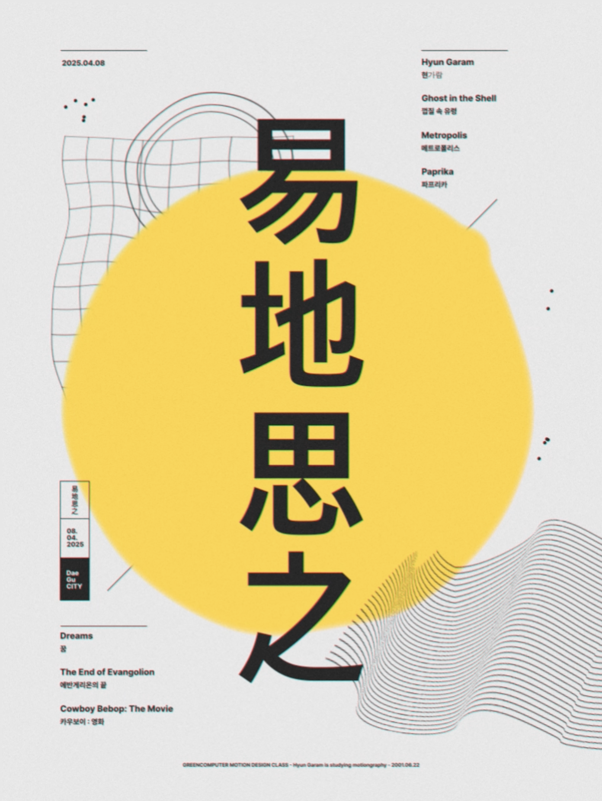
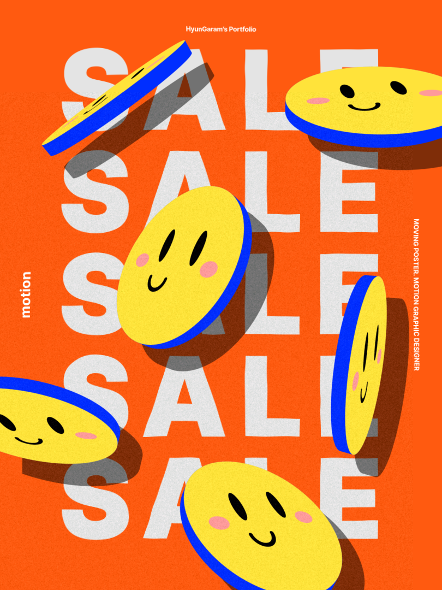
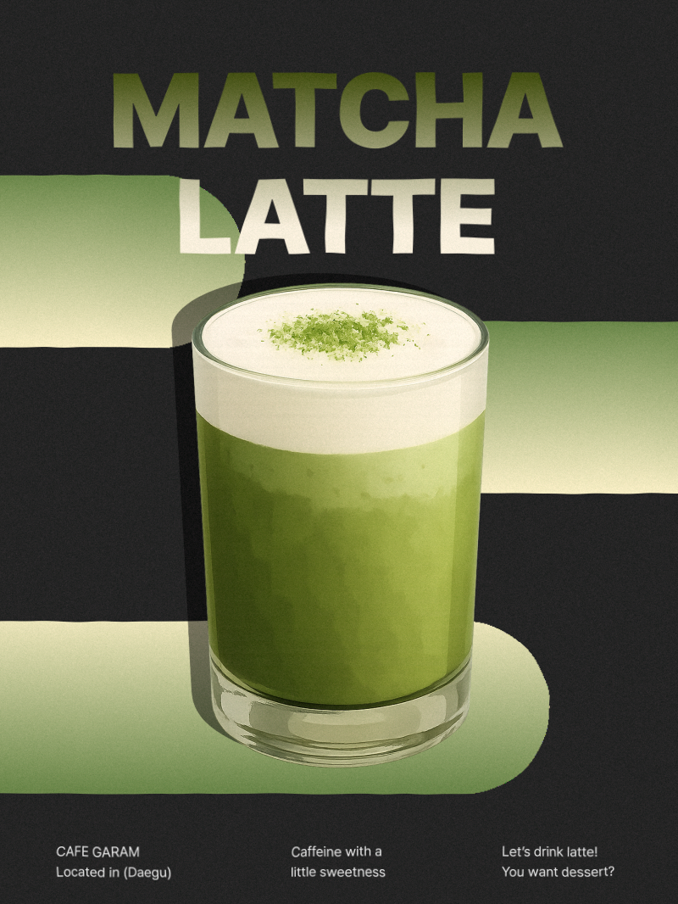
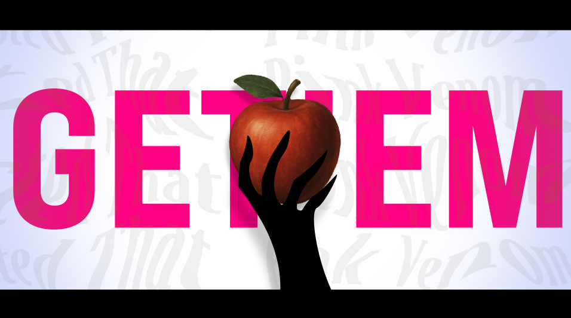
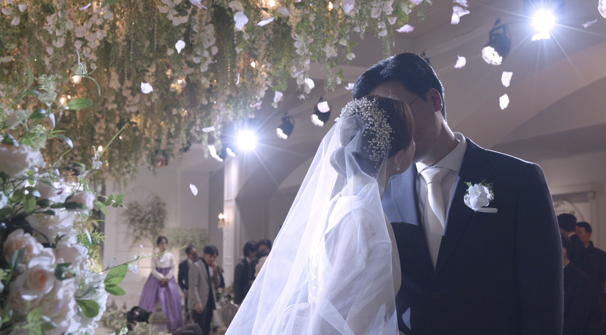
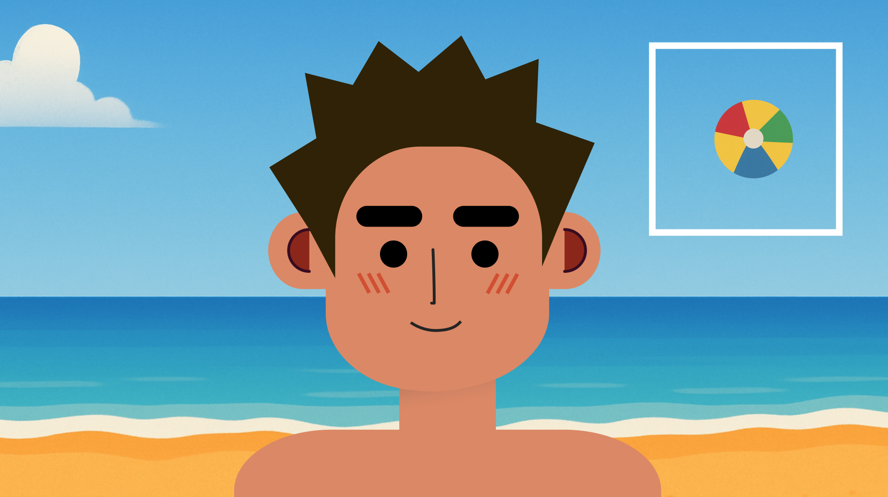

Welcome to my Portfolio
HYUN.GARAM
조화롭게 스며드는
영상편집자 현가람입니다.
Introduce
- Name : 현가람
- Birth : 2001.06.22
-
Email :
복사완료! 😊
-
Contact :


Education
- 2020 : 대구혜화여자고등학교 졸업
- 2025 : 영남대학교 미디어커뮤니케이션학과 졸업
Self interview
Q1. 나는 어떤 사람인가요?
Q2. 영상편집자가 되고 싶은 이유는?
Works
Advertise

Moving Poster
💡 기획 의도
저의 신조인'역지사지(易地思之)'라는 주제를 현대적이고 감각적인 무드로 재해석하는 것이 목표였습니다. 서로의 입장을 바꿔 생각하는 과정을 '흐름'과 '변화'라는 키워드로 시각화하고자 했습니다. 주요 색상 대비(노란색과 블랙)와 공간감을 살린 레이아웃을 통해, 간결하지만 깊은 인상을 남기려 했습니다. 텍스트와 그래픽 요소 각각에 미세한 움직임을 부여하여, 작은 변화들이 모여 하나의 '이해'로 완성되는 느낌을 표현했습니다.
🎬 제작 과정
- 그래픽 디자인 : 중심 키워드를 강조하는
동시에, 대비되는 색상(노란색과 블랙)과 유기적인 웨이브 패턴을
활용하여 감정의 이동과 교차를 시각화했습니다.
- 편집 및 조정 : 텍스트와 그래픽 요소 각각에
속도와 방향의 변화를 부여하여, 감정의 흐름과 입장 전환을
자연스럽게 연출했습니다.
🌟 감상 포인트
- 중심 텍스트가 점진적으로 강조되며 관객의 몰입을 유도하는
부분
- 서로 다른 감정을 상징하는 그래픽 요소(노란색 원과 웨이브)가
교차하며 하나로 연결되는 연출
- 마지막 클로징에서 경계가 허물어지듯 부드럽게 사라지는 그래픽
효과

Sale Poster
💡 기획 의도
상업적 키워드인 SALE에 '코인'이라는 소재를 접목해, 무겁지 않고 가볍고 위트있는 비주얼을 연출하는 것을 목표로 했습니다. 실제 '코인'이 갖는 경제적 의미에 귀여운 얼굴 캐릭터를 얹어, 부담 없이 즐길 수 있는 경쾌한 이미지를 만들고자 기획했습니다. 세일이라는 행위가 "즐겁고 유쾌한 경험"처럼 느껴지도록 가벼운 무드로 풀어냈습니다.
🎬 제작 과정
- 그래픽 디자인 : 강렬한 오렌지 배경 위에
규칙적으로 반복되는 SALE 텍스트를 깔고, 노란색 코인에 웃는
얼굴을 심어 경쾌하면서도 가벼운 톤을 살렸습니다.
- 편집 및 조정 : 캐릭터 코인들이 다양한
각도에서 튀어나오고 회전하며, 화면 전체에 리듬과 활기를
부여했습니다. 입체적인 그림자 처리로 코인들이 실제로
튀어나오는 듯한 입체감을 표현했습니다. 또한, SALE 텍스트는
지나치게 튀지 않도록 반복 배치하여, 코인 캐릭터가 주목받을 수
있도록 조율했습니다.
🌟 감상 포인트
- 반복되는 SALE 텍스트 위로 자유롭게 튀어오르는 코인
캐릭터들의 활발한 움직임
- 코인의 경제적 상징성과 귀여운 표정의 결합이 만들어내는 위트
있는 분위기
- 입체감을 살린 그림자 효과와 다양한 방향으로 튀는 모션이
화면을 생동감 있게 채우는 연출

Cafe Poster
💡 기획 의도
'말차라떼'가 가진 깊고 부드러운 매력을 시각적으로 담아내는 것을 목표로 했습니다. 강렬한 블랙 배경 위에 말차 특유의 녹색을 선명하게 부각시켜, 군더더기 없이 차분한 인상을 주고자 기획했습니다. 제품 자체의 신선함과 부드러움을 시선을 통해 직접 느낄 수 있도록, 단순하지만 세련된 연출을 의도했습니다.
🎬 제작 과정
- 그래픽 디자인 : 블랙 배경에 밝은 녹색
그라데이션 구를 배치해 입체감을 주고, 중심에는 크리미한
텍스처의 말차라떼를 강조했습니다. 상단 텍스트는 'MATCHA
LATTE'라는 제품명을 큼직하게 배치하고, 그라데이션을 적용해
부드러운 인상을 연출했습니다.
- 편집 및 조정 : 그러데이션 구들이 좌우로
천천히 움직이며 화면에 자연스러운 리듬감을 부여했습니다.
빠르거나 급격한 변화 없이 부드러운 속도로 흐름을 만들어,
말차의 고요하고 섬세한 이미지를 강조했습니다. 텍스트는 고정된
상태로 무게감을 유지하여, 제품과 움직이는 배경 사이의 명확한
대비를 주었습니다.
🌟 감상 포인트
- 무겁지 않게, 고급스럽고 차분한 무드
- 제품(말차라떼) 자체를 돋보이게 하는 구성밍
- '깔끔하지만 고급스러운 카페 비주얼'을 강조
Projects

타이포그래피 창작 및 카피
💡 기획 의도
블랙핑크의 'Pink Venom' 곡을 기반으로, 음악의 리듬감과 에너지를 시각적으로 표현하는 것을 목표로 기획했습니다. 초반에는 원곡의 무드를 분석하여 카피(copy) 영상으로 리듬을 그대로 구현하고, 후반부에는 창작(original) 타이포그래피 연출을 추가해 새로운 스타일을 자유롭게 풀어냈습니다. 타이포그래피의 크기, 움직임, 레이어감을 활용해 단어 자체가 음악처럼 느껴지도록 구성했습니다.
🎬 제작 과정
- 그래픽 디자인 : 카피 이후, 스토리는
백설공주가 사과를 먹고 눈을 감는 이야기로 기획했습니다. 사과는
공으로 비유하여 사과(공)의 유혹이라는 소주제를 지닙니다.
- 편집 및 조정 : 박자에 맞춘 타이밍 조절과
텍스트의 등장/퇴장 애니메이션에 공을 들였습니다. 감정의 흐름을
끊지 않도록 컷과 컷 사이의 연결감을 부드럽게 이어갔습니다.
🌟 감상 포인트
- 기획부터 편집까지의 창의력이 담긴 창작파트
- 굵직한 메인 타이포와 부드러운 배경 타이포가 겹쳐지는 다층적
공간 연출
- 강렬한 핑크 컬러와 힘 있는 텍스트 움직임이 만드는
스타일리시한 에너지
타이포그래피 프로젝트
Typography Project
리듬감 있는 모션과 강약 조절된 자막 연출을 통해, 단순한 문장이 아닌 메시지로 전달되도록 기획했습니다.

웨딩영상 편집
💡 기획 의도
결혼식이라는 인생의 특별한 하루를, 단순한 기록이 아닌 ‘감정의 흐름’으로 담아내고자 했습니다. 따뜻한 크림톤과 은은한 필름 그레인을 사용해 아날로그 감성을 살렸고, 부드러운 트랜지션과 시선의 흐름을 고려한 컷 배열로 자연스럽고 몰입감 있게 완성했습니다.
🎬 제작 과정
- 컷 편집 : 결혼식의 흐름을 자연스럽게
이어가기 위해, 주요 순간(입장, 서약, 키스, 플라워샤워)을
중심으로 부드럽게 컷을 연결했습니다. 특별한 전환 효과 없이
장면 전환을 최소화하여 현장의 진정성과 감동을 살렸습니다.
- 색 보정 : 실내 조명 특유의 강한 빛과 그림자
대비를 조율했습니다. 특히 하이라이트가 날아가지 않도록
세밀하게 제어하고, 그림자 영역은 부드럽게 풀어내어 안정된
비주얼 톤을 유지했습니다. 인물 피부톤은 따뜻하고 깨끗하게
표현했으며, 신부 드레스와 화이트 플라워 장식이 자연스럽게
부각되도록 색 균형을 맞추었습니다.
🌟 감상 포인트
- 실내 조명 환경에서도 부드럽고 따뜻하게 표현된 피부톤과 웨딩
드레스 질감
- 결혼식의 감정을 끊김 없이 연결하는 자연스러운 컷 편집
흐름
- 마지막 엔딩, 플라워샤워를 맞으며 키스하는 부부
웨딩편집 프로젝트
Wedding Project
결혼식이라는 인생의 특별한 하루를, 단순한 기록이 아닌 ‘감정의 흐름’으로 담아내고자 했습니다

캐릭터 헤드리깅
💡 기획 의도
캐릭터를 수동적으로 보는 것이 아니라, 직접 움직여 조작할 수 있는 인터랙티브한 경험을 제공하는 것을 목표로 기획했습니다. 조이스틱 입력에 따라 반응하는 간단한 조작을 통해, 사용자와 캐릭터 간의 거리감을 줄이고 더 친근한 몰입감을 유도하고자 했습니다. 밝은 바다 배경과 귀여운 표정의 캐릭터를 활용해 가볍고 경쾌한 경험을 설계했습니다.
🎬 제작 과정
- 조이스틱 연동 모션 구현 : 원조이스틱 방향
입력에 따라 캐릭터가 좌우로 부드럽게 이동하도록 설정했습니다.
단순 이동뿐만 아니라, 방향에 따라 캐릭터 표정이나 움직임이
자연스럽게 반응하도록 조정해 생동감을 부여했습니다.
- 편집 및 조정 : 익스프레션 문구를 활용한
조이스틱 자동화. 심플하고 명확한 선과 색을 활용해 캐릭터를
제작하고, 맑은 하늘, 푸른 바다, 노란 모래로 구성된 배경을 통해
여름 특유의 시원한 분위기를 살렸습니다.
🌟 감상 포인트
- 조이스틱 방향 조작에 따라 즉각적으로 반응하는 캐릭터의
자연스러운 이동
- 푸른 하늘과 바다가 어우러진 여름 느낌 배경과 깔끔한 캐릭터
아트워크
캐릭터 조이스틱 프로젝트
Character Joystick Project
에프터이펙트의 익스프레션을 활용하여 조이스틱을 만들고, 조이스틱을 움직이면 캐릭터의 움직임을 제어하도록 애니메이션을 제작했습니다.
Experiences
Project Experience
프로젝트 1
프로젝트 2
💡 기획 의도
결혼식이라는 인생의 특별한 하루를, 단순한 기록이 아닌 ‘감정의 흐름’으로 담아내고자 했습니다. 따뜻한 크림톤과 은은한 필름 그레인을 사용해 아날로그 감성을 살렸고, 부드러운 트랜지션과 시선의 흐름을 고려한 컷 배열로 자연스럽고 몰입감 있게 완성했습니다.
🎬 제작 과정
- 그래픽 디자인: 신랑신부의 감정선에 따라
색상 톤을 미세하게 조정했습니다. 예를 들어 서약 장면에서는
따뜻한 빛을 강조하고, 에필로그에서는 살짝 흑백톤으로 전환해
여운을 남겼습니다.
- 편집 및 조정: 감정이 고조되는 순간마다
슬로우모션과 자연스러운 디졸브를 삽입해 리듬감 있게
연출했습니다. 현장의 소리를 살리되, 필요에 따라 공간감을
더하는 리버브와 배경음악으로 감정을 확장시켰습니다.
🌟 감상 포인트
- 영상 초반, 신부가 거울을 보는 장면
- 영상 중반, 부부가 성혼선언서를 읽는 장면
- 마지막 엔딩, 플라워샤워를 맞으며 키스하는 부부
프로젝트 3